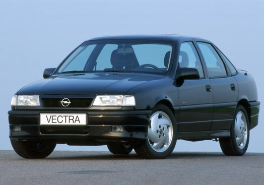
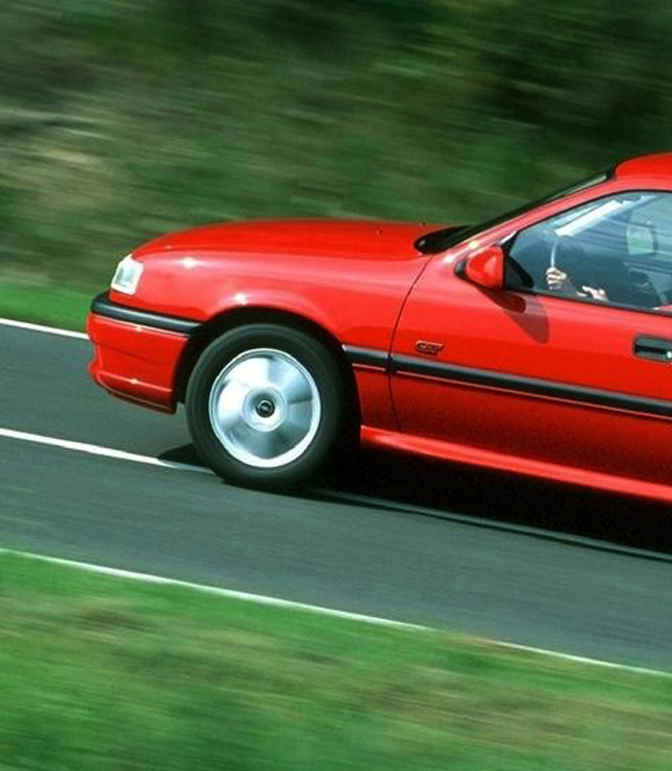

|  |
- Лидер в технологиите, аеродинамиката и дизайна - Над 20 национални и международни награди - Пазарен лидер в силно конкурентния среден клас Всичко в Opel Vectra е ново, когато моделът се появява на пазара през есента на 1988 година или точно преди 25 години: името, формите и внедрените технологии. Моделът на Opel от среден клас има трудната задача да замени успешната Ascona, която е представена през 1970 година и еволюира в три моделни поколения. Името на Vectra и нейната аеродинамична форма са вдъхновени от прогресивната визия на Omega. Предлаган във версии седан и хечбек, Vectra представя нови технологии в серийното производство – това е първият модел на Opel, който може да бъде поръчван с двойно предаване. А в момента на представянето на следващото поколение в края на лятото на 1995 година, Vectra A вече е спечелила над 20 национални и международни награди, осигурявайки техническа база за спортното купе Calibra и постигайки пазарен дял до 20 процента при пика на продажбите си. С 2.5 милиона броя продадени в Европа, Vectra се превръща в най-успешния модел от среден клас в историята на Opel до този момент |
| Прогресивен в дизайна си, авангарден в технологично отношение Над 3.9 милиона Opel Ascona са продадени през периода на производството на модела от 18 години, но когато Vectra се появява преди 25 години, тя става символ на бъдещето, осигурявайки достойно място на Ascona в историята. От последната е приета единствено компановката с предно предаване и размера, а пространството в автомобила е драстично увеличено. С пет места и багажен обем от 530 литра, новата Vectra конкурира дори луксозния модел Senator на Opel. А при сгъване на задните седалки, багажният обем се увеличава до 840 литра. Opel инвестира над пет милиона часа развойно време за създаването на Vectra, като само за прецизирането на формите от аеродинамична гледна точка са посветени 20,000 часа. Постигайки отличен коефициент на обтекаемост 0.29, Vectra е един от най-аеродинамичните автомобили в класа си, както и култовия Omega, който стана основа на нов дизайнерски език и нова линия в моделната гама на Opel през 1986 година. Vectra, насочена към европейския пазар на 90-те години, е „прогресивна като дизайн, водеща в аеродинамично и авангардна в технологично отношение”, според прес информацията. Извършените промени в конструкцията са многобройни. В допълнение към предлаганата като допълнително оборудване напълно нова електронно контролирана четиристепенна автоматична предавателна кутия с три режима на движение (economy, sport и winter), Vectra става първият лек автомобил на Opel предлаган със система за задвижване на четирите колела. Разработена в сътрудничество с Steyr-Daimler-Puch, системата включва вискосъединител, позволяващ променливо разпределение на мощността към задния задвижван мост в зависимост от условията на движение и пътя и многодисков съединител, прекратяващ силовата връзка със задния мост по време на спиране, гарантирайки по този начин високо ниво на надлъжна стабилност. Опционалното двойно предаване се предлага за Vectra с 1.8 и 2.0 литрови двигатели. Върховият модел за гамата е седанът Vectra 2000 16V 4x4, с мощност 150 к.с., задвижван от 2.0 литров четирицилиндров DOHC агрегат с четири клапана на цилиндър, двойно предаване, електронно контролирана ABS, независимо задно окачване с коси рамена от Omega и дискови спирачки на всички колела. Vectra 2000 16V, която постига максимална скорост от 215 км/ч се предлага и във версия само с предно предаване и заема специално място в гамата на Vectra, притежавайки характер подобен на този на Kadett GSi и Omega 3000. Базовото задвижване на Vectra е четирицилиндров 1.6 литров OHC двигател с мощност 75 к.с., разполагащ с катализатор с ламбда сонда. По-високо позиционирани в гамата са четирицилиндровите двигатели с 1.8 литра (88 к.с.) и 2.0 i CAT (с катализатор) със 115 к.с. Нов за гамата е 1.7 литровият дизел с атмосферно пълнене и 57 к.с. Vectra се предлага в два варианта на каросерията – като класически седан с четири врати и като хечбек с пет врати – и в четири нива на оборудване. Седанът включва версиите GL, GLS и луксозния CD, а хечбекът – GL и спортния GT. Динамично лайфстайл комби като версията Voyage на Ascona не фигурира в офертите. |
 |